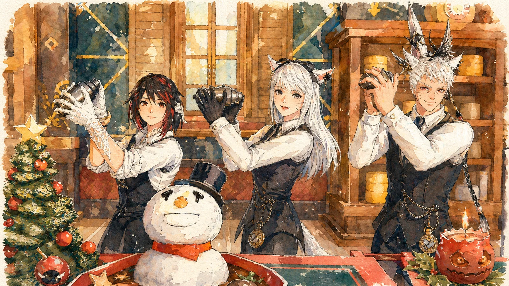

主
💬 坐檯陪聊
以各種身分入席對坐——溫柔醫生、小學老師、攻略嚮導、居酒屋老闆娘……市井百業任君指定。可挑選包廂場景（診療室、教室、和室茶間、溫泉雅座等），以 20 分鐘為一單位計時。
RP Shop
在白銀鄉的溫泉一隅，有一間以「人」為菜單的店。
醫生、小學老師、市井百業——選一位 NPC、挑一間包廂，
以二十分鐘為一盞茶的長度，陪你聊上半晌、留一幀合影。
帳裡的席次尚在鋪陳。待門前燈籠點亮之日，即可在此留下您的名字。
Menu · 服務內容
主營坐檯陪聊與包廂拍照，佐以餐點；每 20 分鐘為一個計費單位，價目將於開幕時公告。
以各種身分入席對坐——溫柔醫生、小學老師、攻略嚮導、居酒屋老闆娘……市井百業任君指定。可挑選包廂場景（診療室、教室、和室茶間、溫泉雅座等），以 20 分鐘為一單位計時。
由專業攝影師入廂掌鏡，與您指定的 NPC 在主題包廂裡留下合影，成品精修後交付。
坐檯期間可隨時點餐——和風膳食、茶點與特調飲品，讓話題在杯盞之間更盡興。
不定期邀請演奏家蒞臨現場即興加演；預約時可許願，依演奏家檔期安排，不另收費時視為本店招待。
Hours · 開店時辰
帳中燈火，於下列時分為你點亮；實際開店以 Discord 公告與預約排班為準。
※ 需事先於 Discord 或預約表單登記，方能為你保留店員與包廂時段。
Pricing · 帳目・計費方式
緣分以「盞」計——每 20 分鐘為一盞茶的時光；下列價目為參考，正式價格以開幕公告為準。
— Gil
— Gil
— Gil
※ 大廳與外帶價可能不同，實際以現場公告為準。管理員登入後可直接點價格數字修改（例：改成「20,000 Gil」），小算盤會自動跟著算。
計算方式：客人數 × 店員數 × 時長（盞）× 指名費 ＋ 包廂費
Menu · 茶點・餐單
坐檯佐談之際，佐一盞茶、一份點心——以下餐單為參考，實際供應與價格以現場公告為準。
Our Staff · 店員名簿
留名於帳中的，皆是此店的一期一會。輕點照片，便能望見他們的身影特寫。
Order · 線上點餐
請捲回上方「茶點・餐單」，在想吃的餐點卡片上按「＋」加入；此處會即時列出已點內容。 單點料理低消 5,000 Gil；未標價餐點暫不計入金額。
尚未點選任何餐點。
⚖ 自訂身分與服務風格請符合善良風俗：請勿輸入涉及色情、暴力、歧視、騷擾 或違反遊戲服務條款的內容；本店保留調整措辭與婉拒服務的權利。
加拍費用將支付給配合入鏡的店員與攝影師。

News · 活動告示板
帳中近期的祭事與優惠，皆張貼於此。
🎊 開幕特惠
開幕首月光臨的每一位旅人，餐點一律八折，並附贈本店特調飲品一杯；預約拍照服務者，加贈精修照片一張。
🌸 節慶活動
新年初詣、櫻花祭、盂蘭盆納涼祭——四季的祭事正在籌備中，詳情將於此告示板與 Discord 同步公告。
VIP · 貴賓優待
凡於帳中留下足跡的旅人，皆會記在友人帳上；緣分越深，回禮越厚。※目前禮遇僅供參考，待工作人員討論確定後會再發布更新版本，我們將以網站公告最新版優待為主。
累積消費 100,000 Gil——每次光臨贈特調飲品一杯，並優先收到節慶活動通知。
累積消費 300,000 Gil——享白帳全部禮遇，拍照服務免費一次，餐點常年九折。
累積消費 600,000 Gil——享朱帳全部禮遇，包廂與 NPC 陪聊時段優先預留，並登上貴客榜。
Ranking · 貴客榜
感謝與本帳結緣最深的貴客們。榜單由掌櫃每月更新。
壹虛位以待——— Gil金帳貴客
貳虛位以待——— Gil朱帳貴客
參虛位以待——— Gil朱帳貴客
肆虛位以待——— Gil常連さん
伍虛位以待——— Gil常連さん
Etiquette · 帳前約定
入帳之前，先讀一段小約定——讓每位旅人與店員，都能安心享受這場一期一會。
Positions · 招募職務
依商店需求而定，歡迎依你的專長與興趣認領。
規劃各主題包廂（診療室、教室、和室茶間、溫泉雅座…）的佈景與輪換，打造整體氛圍。
供應坐檯佐談的餐點、茶點與特調飲品，依商店需求備貨。
提供店內家具與庭具，依商店需求而定。
本店主力！以指定身分（醫生、小學老師、各行各業）入席包廂坐檯陪聊，依預約單準備角色設定與話題。
負責包廂合影服務：構圖打光、GPose 掌鏡與成品精修，拍出讓人驚豔的照片。
熱衷於把遊戲中的內容分享到社群媒體。
想參與 RP 商店的經營或演出？ 來 Discord 找我們聊聊 →